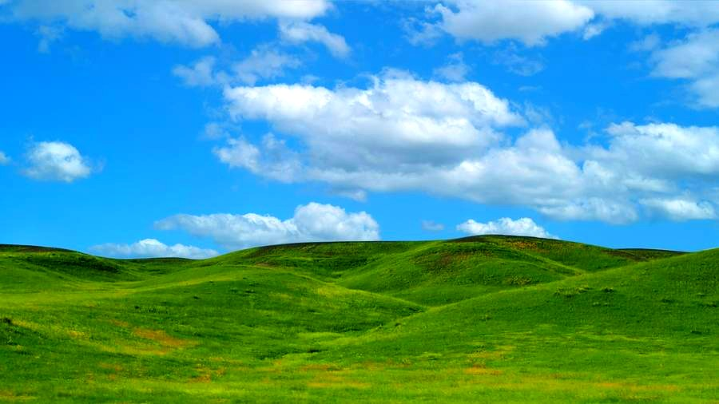
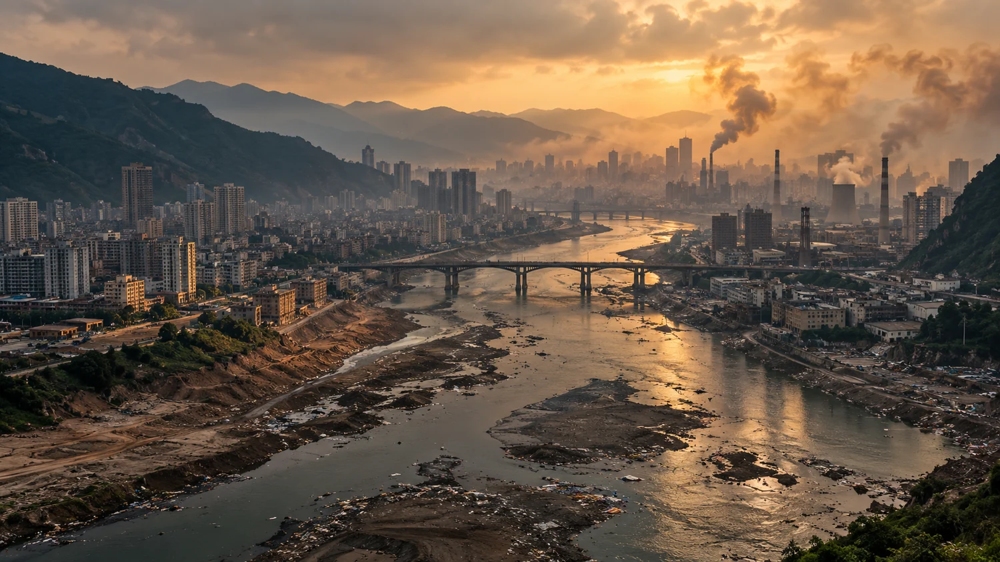

Feito para durar pouco
Trocas frequentes, embalagens em excesso e produtos difíceis de consertar transformam recursos em descarte.

Agora volte ao app EcoQuest e toque em Entrar com seu e-mail e senha.
Se estiver no celular, abra o aplicativo pela tela inicial.
No cinema, tudo pode começar de novo. Fora da tela, cada floresta, rio e espécie depende das escolhas que fazemos agora.
Em WALL-E, uma montanha de resíduos é cenário de ficção. Aqui, o problema tem endereço: o que consumimos, quem recolhe, para onde vai e quem convive com o impacto. Nossa proposta não é pedir perfeição individual — é mostrar o que podemos mudar juntos.
O melhor resíduo é aquele que nem precisou ser produzido. Reparar e compartilhar vêm antes da lixeira colorida.
Coleta pública, cooperativas, escolas, empresas e moradores têm papéis diferentes — e todos importam.
Experimente. A resposta do sistema explica por que precisamos agir antes do “game over”.
Quando o caminhão vira a esquina, começa outra história: transporte, triagem, trabalho humano, tratamento e destino final. No Brasil, a distância entre coletar e resolver ainda é enorme.
Dados de 2024 · ABREMA — Panorama dos Resíduos Sólidos no Brasil 2025 ↗. Os indicadores medem etapas diferentes; por isso não devem ser somados.
Um plástico mal descartado pode ser recolhido; um produto descartável desnecessário nem precisava ter sido fabricado. Reduzir a produção de resíduos é tão importante quanto destiná-los corretamente.
Trocas frequentes, embalagens em excesso e produtos difíceis de consertar transformam recursos em descarte.
Separar ajuda, mas o resultado depende de coleta seletiva, triagem, mercado para os materiais e políticas públicas.
Catadoras, catadores e cooperativas recuperam materiais e prestam um serviço ambiental que merece reconhecimento.
Celulares, baterias e computadores usam minerais e energia. Prolongar a vida útil é tão relevante quanto modernizar.
Sem mudanças, a geração mundial de resíduos sólidos municipais pode alcançar 3,8 bilhões de toneladas em 2050 (projeção do PNUMA, 2024).
VER ESTUDO ↗O objetivo não é trocar uma embalagem por outra e chamar isso de revolução. É prolongar a vida dos objetos, evitar desperdício e garantir um destino adequado ao que restar.
Selecione um material e veja o caminho mais responsável. A coleta varia conforme o município.
A garrafa PET pode ser reciclada, mas depende da coleta e da triagem da sua cidade. Reutilizar uma garrafa durável também ajuda a evitar novas embalagens.
Mapas de pontos de coleta, redes de reparo, sensores para evitar perdas e cooperativas bem equipadas são ferramentas úteis. Nenhum aplicativo substitui política pública ou responsabilidade das empresas.
Escolha compromissos possíveis para sua realidade. Não se trata de acertar sempre: trata-se de transformar uma ação isolada em hábito e chamar mais gente para participar.
Selecione sua primeira missão.
O caminho mais sustentável nem sempre é comprar a versão “eco” mais nova.
Escolha uma opção para avaliar o impacto.
Arraste a divisória: à esquerda, um alerta de ficção; à direita, um horizonte possível. Não é uma previsão — é uma escolha de prioridades.

Cenários fictícios criados com IA para imaginar dois caminhos possíveis. Não são fotografias do futuro.
Um projeto ambiental fica mais forte quando sai do discurso e vira conversa, cartaz, vídeo, mutirão e mudança concreta. Aqui está um kit para usar na escola.
Não espere uma segunda Terra. Comece pela que existe: menos desperdício, mais reparo, melhor coleta e ação coletiva.
DIA 1–2 / OBSERVE — Descubra o que mais vira lixo na sua rotina ou escola. Registre sem expor ninguém.
DIA 3–4 / EXPERIMENTE — Teste uma alternativa: refil, reparo, garrafa durável, troca ou coleta adequada.
DIA 5–6 / CONVERSE — Pergunte à escola como funciona a coleta e quais barreiras existem.
DIA 7 / COMPARTILHE — Mostre o que aprendeu e proponha um próximo passo verificável.
00–07s: imagem de um produto descartado. Narração: “O que acontece depois que a gente joga fora?”
07–16s: imagens de coleta, reparo ou triagem. Narração: “O resíduo não some. Ele muda de lugar — e de mãos.”
16–25s: uma ação local concreta. Narração: “A solução começa antes da lixeira e continua com a cidade inteira.”
25–30s: slogan em tela: “Nosso planeta não tem botão de reiniciar.”
Indicadores brasileiros: ABREMA — Panorama 2025 (dados de 2024). Cenário global: PNUMA — Panorama Global 2024. A inspiração visual e narrativa em WALL-E é uma referência cultural; a campanha é um projeto escolar independente.
Fotografias preservadas do arquivo original; créditos identificados nas legendas. As imagens do comparador são ilustrações, não fotografias do futuro.